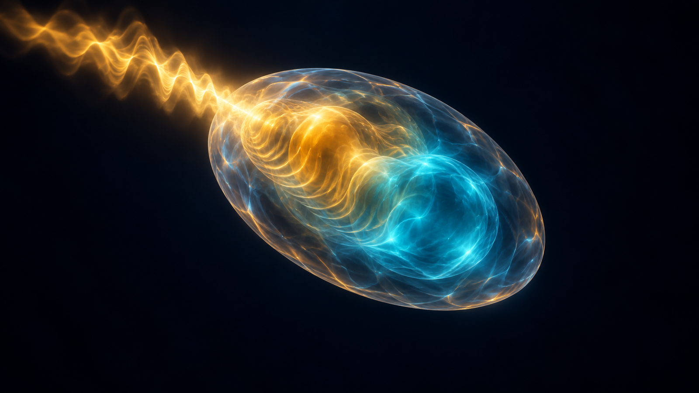
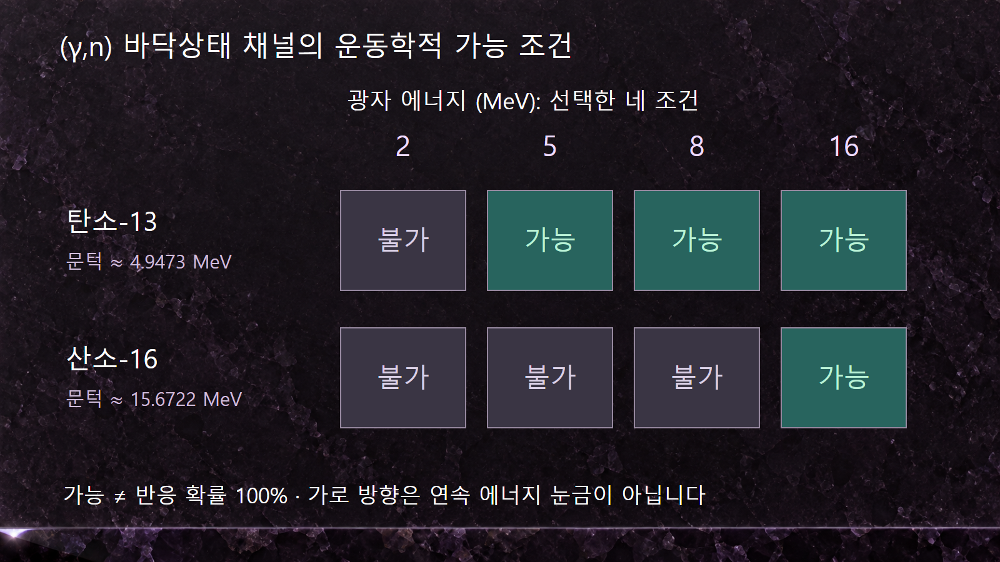
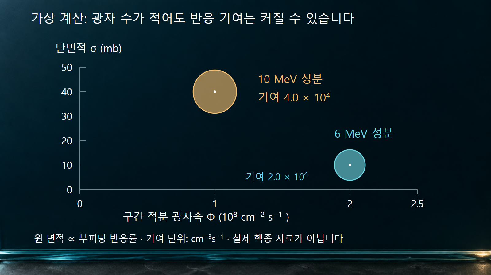

질량·에너지와 핵반응 · 034
광핵반응
광자 문턱·스펙트럼·방출입자 수를 구분하는 핵반응

광핵반응은 광자가 원자핵에 에너지와 운동량을 전달하여 핵의 상태나 구성을 바꾸는 반응입니다. 광자를 흡수한 핵에서 중성자·양성자 등이 나오는 광분해가 대표적입니다. 같은 광자라도 원자의 전자와 상호작용하는 광전효과나 콤프턴산란과는 구별합니다.
1. 광자의 상대가 전자인지 원자핵인지 구분합니다
(γ,n)은 광자가 입사하고 중성자가 방출되는 반응을 뜻합니다. 표적의 질량수는 하나 줄고 원자번호는 같습니다. (γ,p)에서는 양성자가 나가므로 질량수와 원자번호가 각각 하나 줄어듭니다. 핵의 여기 뒤 감마선을 내보내는 과정도 광자와 핵의 상호작용에 포함되지만, 모든 광핵반응이 중성자를 만드는 것은 아닙니다.
광전효과는 결합전자를 방출하고, 콤프턴산란은 광자와 전자 사이의 에너지·운동량 교환입니다. 전자·양전자 쌍생성의 1.022 MeV라는 척도 역시 특정 원자핵의 중성자 분리 문턱이 아닙니다. 따라서 광자의 에너지나 ‘감마선’이라는 이름만 보고 광중성자 생성 여부를 판단하지 않습니다.
2. 광자는 질량이 없어도 운동량이 있습니다
광자의 에너지와 운동량은 Eγ = pc로 연결됩니다. 정지 표적에서 중성자를 떼어 내는 데에는 분리에너지 Sn뿐 아니라 최종 입자들이 입사 광자의 운동량을 보존하는 데 필요한 에너지도 포함됩니다. 생성핵과 중성자의 바닥상태가 최종 상태인 경우 문턱은 Eth = Sn + Sn2/(2Mc2)입니다. M은 처음 표적의 정지질량입니다.
이는 질량이 있는 입사입자의 문턱식 −Q(1 + ma/M)에서 ma를 0으로 넣어 얻은 Sn만의 식과 다릅니다. 광자의 에너지-운동량 관계를 사용해야 합니다. 잔류핵이 들뜬상태로 남는 채널이라면 그 들뜸에너지도 최종 정지에너지 차이에 포함합니다.
3. 탄소-13과 산소-16은 문턱이 크게 다릅니다
예시 1｜AME2020 질량으로 13C → 12C + n의 분리에너지를 계산하면 약 4.9463 MeV입니다. 반동 보정을 더한 광자 문턱은 약 4.9473 MeV입니다. 16O → 15O + n에서는 분리에너지가 약 15.6639 MeV이고 광자 문턱은 약 15.6722 MeV입니다. 표적과 잔류핵의 중성원자 전자 수가 같아 전자 정지질량은 상쇄되며, 여기서는 원자질량을 이용한 교육용 근사값을 표시합니다.
최대 광자 에너지가 8 MeV인 빔에는 탄소-13의 (γ,n) 문턱을 넘는 광자가 있을 수 있지만, 산소-16의 위 채널을 열 수 있는 광자는 없습니다. 이 판단은 문턱과 최대 에너지의 비교입니다. 탄소-13에서 실제 반응이 몇 번 일어나는지는 빔 스펙트럼과 단면적을 추가로 알아야 합니다. 천연 탄소나 산소의 모든 동위원소를 이 두 핵종 하나로 대표시키지도 않습니다.
| 바닥상태 채널 | 중성자 분리에너지 | 광자 문턱 근사 | 최대 8 MeV 빔 |
|---|---|---|---|
| 13C(γ,n)12C | 4.9463 MeV | 4.9473 MeV | 문턱 위 성분이 존재할 수 있습니다. |
| 16O(γ,n)15O | 15.6639 MeV | 15.6722 MeV | 해당 채널은 에너지상 열리지 않습니다. |

4. 빔의 끝점 에너지는 단색 에너지가 아닙니다
제동복사 광자 빔은 하나의 에너지만 가지는 것이 아니라 연속적인 스펙트럼을 가집니다. 끝점 에너지는 그 스펙트럼의 상한입니다. 따라서 ‘끝점 8 MeV’라는 조건을 광자 전부가 8 MeV라는 뜻으로 계산하면 문턱 아래 광자까지 반응에 기여시키는 오류가 생깁니다.
레이저-콤프턴 산란 등으로 만드는 준단색 빔도 유한한 폭과 응답을 가질 수 있습니다. 측정 수율에서 한 에너지의 단면적을 구하려면 광자 분포와 장치 응답을 고려해야 합니다. 빔의 최대 에너지, 평균 에너지, 개별 광자의 에너지를 서로 바꾸어 쓰지 않습니다.
5. 두 에너지 성분의 기여를 따로 계산합니다
예시 2｜실제 핵종 자료가 아닌 가상 표적에서 N = 1.0 × 1022 cm−3라고 가정합니다. 6 MeV 부근 성분의 적분 광자속은 2.0 × 108 cm−2s−1, 대표 단면적은 10 mb입니다. 10 MeV 부근 성분은 1.0 × 108 cm−2s−1, 단면적은 40 mb입니다. 각 구간 안에서 단면적을 대표값으로 근사하며, 이 광자속은 이미 구간 에너지에 대해 적분한 값입니다.
1 mb = 10−27 cm2이므로 첫 성분의 반응률은 1022 × 2 × 108 × 10 × 10−27 = 2.0 × 104 cm−3s−1입니다. 둘째 성분은 4.0 × 104 cm−3s−1이고 합계는 6.0 × 104 cm−3s−1입니다. 광자 수가 적은 둘째 성분의 기여가 더 큽니다.
전체 광자속으로 가중한 유효 단면적은 (2 × 10 + 1 × 40)/(2 + 1) = 20 mb입니다. 두 단면적의 단순 평균 25 mb를 쓰면 7.5 × 104 cm−3s−1가 되어 이 예에서 25% 높아집니다. 연속 스펙트럼에서는 같은 원리로 R = N∫φγ(E)σ(E)dE를 계산합니다. 실제 탄소-13 또는 산소-16의 단면적이나 특정 장치의 성능으로 해석하지 않습니다.

6. 반응 사건 수와 방출 중성자 수를 구분합니다
(γ,n) 사건 하나는 중성자 하나를 만들지만 (γ,2n) 사건 하나는 중성자 둘을 만듭니다. 그러므로 사건 단면적을 합한 값과 중성자 생성 개수로 가중한 단면적은 다릅니다. 중성자 생성률을 구하려면 각 채널의 방출 개수까지 반영해야 하며, 이미 생성 단면적으로 가중된 자료에 그 개수를 다시 곱하면 중복이 됩니다.
IAEA 광핵자료 설명 논문도 부분 채널과 중성자 다중도별 자료의 구별을 다룹니다. IAEA/PD-2019.2 저장소에는 광자 입사 평가자료와 응용용 처리자료가 구분되어 있습니다. 계산용 자료를 고를 때 표적핵종, 입사 광자 에너지 범위, 채널, 단면적의 정의와 처리 형식을 함께 확인합니다.
7. 광자 차폐만으로 이차 방사선을 설명할 수는 없습니다
광핵 채널이 열리는 에너지 영역에서는 원래 광자와 다른 성질의 중성자 및 잔류핵이 만들어질 수 있습니다. 광자 수송에서 전자기 상호작용만 계산한 결과와 광핵반응을 결합한 결과는 이차 방사선의 종류부터 달라질 수 있습니다. 다만 문턱을 넘었다는 사실만으로 그 영향이 항상 지배적이라고 말하지 않습니다.
결과를 해석하는 순서는 표적별 문턱, 실제 광자 스펙트럼, 채널 단면적, 방출 입자의 에너지·각도·개수입니다. 광자 끝점 하나를 반응률로 바꾸거나 쌍생성 문턱을 광중성자 문턱으로 쓰지 않는 것이 광핵반응 계산의 출발점입니다.